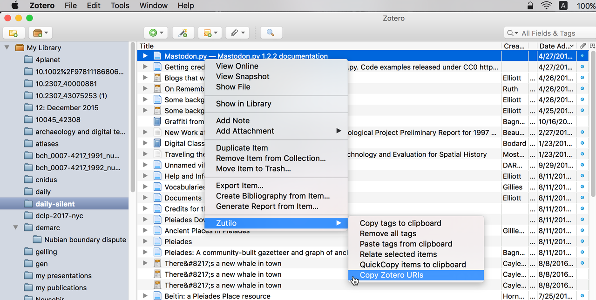

Zotero Item Keys (Again)
Back in 2012, I posted about Zotero item keys and my attempts to get at them for purposes of linking and reuse. There are better ways, hence this update.
Option 1: Export to CSV. The item key is in the first column:
"Key","Item Type","Publication Year","Author","Title" "MK49RMWU","encyclopediaArticle","2016","","Κρήτη","Βικιπαίδεια"
Option 2: Install the Zutilo plugin for Zotero Standalone. It adds several features to the Zotero client, including the ability to get the Zotero URIs for one or more records via a context menu item. The last element in the Zotero URI is the item key:
